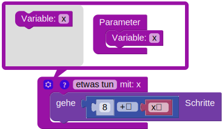

Haus des Nikolaus
Die Schildkröte soll das Haus des Nikolaus zeichnen.
Die Schildkröte soll das Haus des Nikolaus mehrfach zeichnen.
Hinweis: Definiere dazu eine Funktion, die das Haus zeichnet und verwende diese.
Die Schildkröte soll das Haus des Nikolaus mehrfach in verschiedenen Größen zeichnen.
Hinweis: Definiere dazu eine parametrisierte Funktion, die das Haus in Abhängigkeit von einem Parameter in verschiedenen Größen zeichnet und verwende diese.
Weitere Hinweise:
Um eine parametriesierte Funktion zu erstellen, füge zu einer Funktion über die Einstellungen (Zahnrad-Icon) einen Parameter hinzu:
Um eine parametriesierte Funktion zu verwenden musst du dann den Parameter angeben: